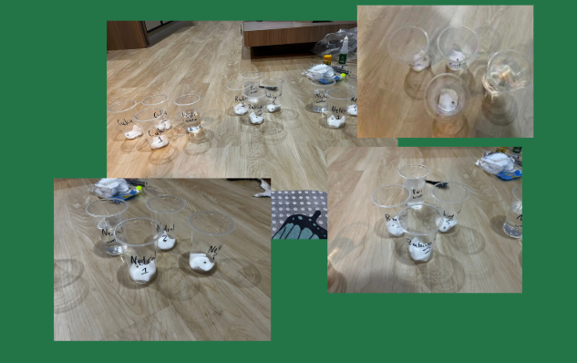
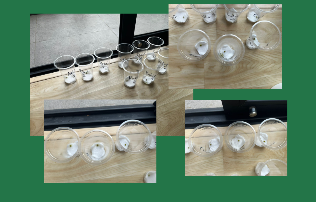
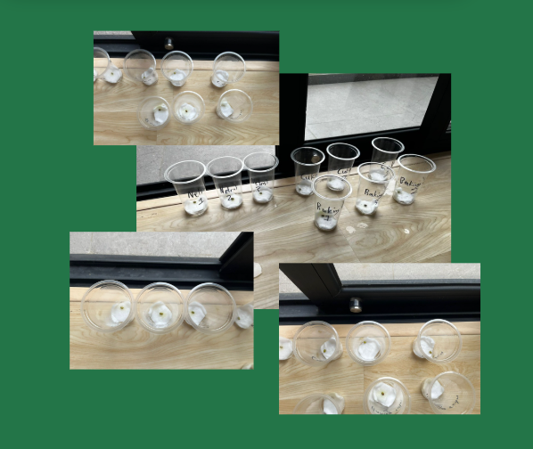
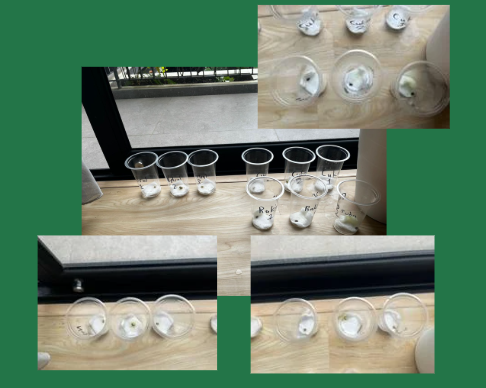
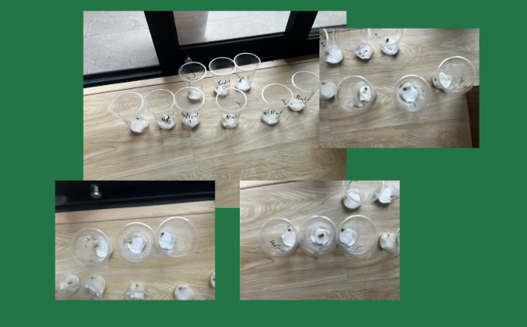
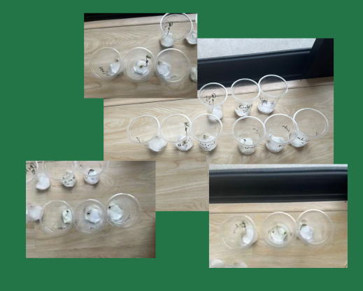
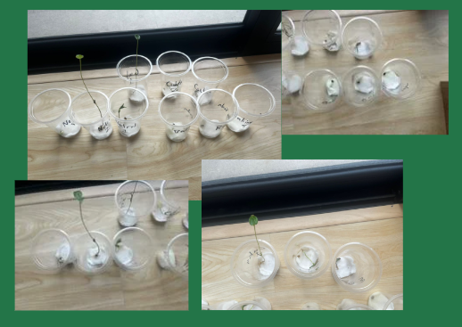
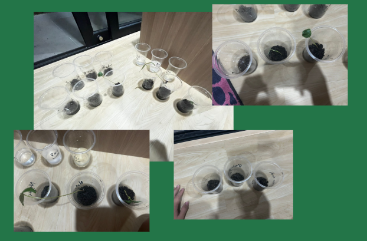

Experiment🌱
Guidance

Experiment :
Day 1 : Kacang hijaunya masih belum menunjukkan pertumbuhan satu-pun
Day 2 : Kacang hijau mulai terlihat ada sedikit kecambah dan terlihat pertumbuhannya dengan jelas
Day 3 : Beberapa kacang hijau sudah mulai pecah cangkannya dan menjadi kecambah
Day 4 : Semua kacang hijau bertumbuh tapi tidak terlihat secara signifikan
Day 5 : Semua kacang hijau sudah menjadi kecambah
Day 6 : Air netral pada hari ke-6 bertumbuh secara signifikan daripada yang lainnya
Day 7 : Pada hari ke-7 cuka baru menunjukkan pertumbuhannya, satu perjalanan dengan netral tetapi baking soda tidak terlihat pertumbuhannya
Day 8 : Hari ke terakhir, semuanya dipindahkan kedalam tanah
Konklusi
Setelah melakukan percobaan ini, kami menyimpulkan bahwa air netral adalah yang terbaik untuk menumbuhkan kacang hijau. Kacang hijau yang ditanam dalam air netral tumbuh lebih cepat dan lebih sehat dibandingkan dengan yang ditanam dalam cuka atau baking soda.
Dengan demikian, kami dapat menyimpulkan bahwa pH air sangat mempengaruhi pertumbuhan kacang hijau. Air netral (pH 7) adalah yang terbaik untuk pertumbuhan kacang hijau, sedangkan air dengan pH yang lebih tinggi atau lebih rendah dapat menghambat pertumbuhannya.